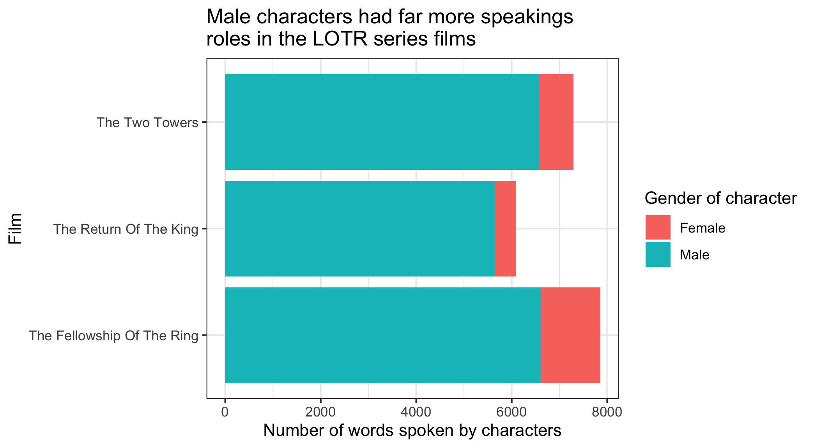
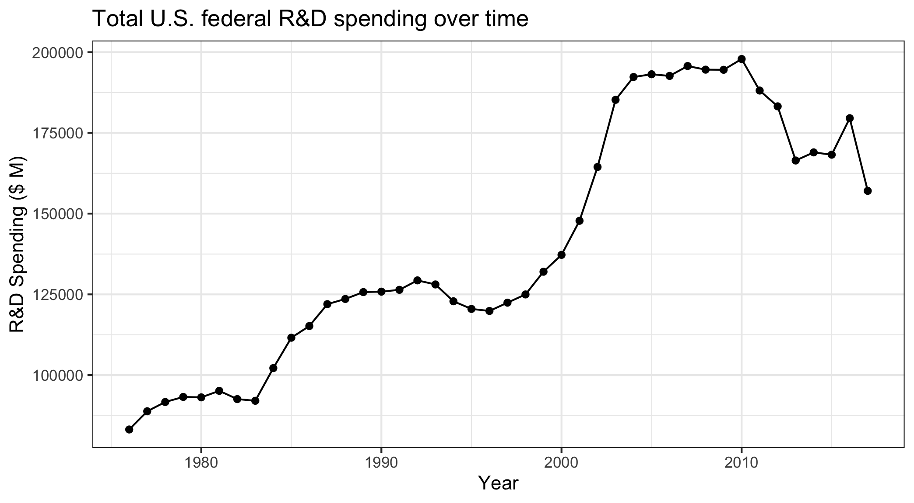

milk_production <- read_csv(here::here('data', 'milk_production.csv'))
pv_cells <- read_excel(
here::here('data', 'pv_cell_production.xlsx'),
sheet = 'Cell Prod by Country',
skip = 2
) %>%
filter(!is.na(Year)) %>%
# Need to convert a few columns so the data types match
mutate(
China = as.numeric(China),
Taiwan = as.numeric(Taiwan),
Malaysia = as.numeric(Malaysia),
Germany = as.numeric(Germany),
`South Korea` = as.numeric(`South Korea`),
Others = as.numeric(Others)
)Tidy Data
EMSE 4572/6572: Exploratory Data Analysis
Practice 1: Reshaping Data
Run the code chunk to read in the following two data files:
pv_cell_production.xlsx: Data on solar photovoltaic cell production by countrymilk_production.csv: Data on milk production by state
Now modify the format of each:
- If the data are in “wide” format, convert it to “long” with
pivot_longer() - If the data are in “long” format, convert it to “wide” with
pivot_wider()
# milk_production is in long format - convert to wide
milk_wide <- milk_production %>%
pivot_wider(
names_from = state,
values_from = milk_produced)
head(milk_wide)#> # A tibble: 6 × 52
#> region year Maine `New Hampshire` Vermont Massachusetts `Rhode Island`
#> <chr> <dbl> <dbl> <dbl> <dbl> <dbl> <dbl>
#> 1 Northeast 1970 6.19e8 356000000 1.97e9 658000000 75000000
#> 2 Lake States 1970 NA NA NA NA NA
#> 3 Corn Belt 1970 NA NA NA NA NA
#> 4 Northern P… 1970 NA NA NA NA NA
#> 5 Appalachian 1970 NA NA NA NA NA
#> 6 Southeast 1970 NA NA NA NA NA
#> # ℹ 45 more variables: Connecticut <dbl>, `New York` <dbl>, `New Jersey` <dbl>,
#> # Pennsylvania <dbl>, Delaware <dbl>, Maryland <dbl>, Michigan <dbl>,
#> # Wisconsin <dbl>, Minnesota <dbl>, Ohio <dbl>, Indiana <dbl>,
#> # Illinois <dbl>, Iowa <dbl>, Missouri <dbl>, `North Dakota` <dbl>,
#> # `South Dakota` <dbl>, Nebraska <dbl>, Kansas <dbl>, Virginia <dbl>,
#> # `West Virginia` <dbl>, `North Carolina` <dbl>, Kentucky <dbl>,
#> # Tennessee <dbl>, `South Carolina` <dbl>, Georgia <dbl>, Florida <dbl>, …# pv_cells is in wide format - convert to long
pv_cells_long <- pv_cells %>%
pivot_longer(
cols = China:World,
names_to = "country",
values_to = "numCells") %>%
# Remove the "World" rows as it's a total (not a country)
filter(country != "World")
# Could also do this
pv_cells_long <- pv_cells %>%
pivot_longer(
cols = -Year,
names_to = "country",
values_to = "numCells") %>%
# Remove the "World" rows as it's a total (not a country)
filter(country != "World")
head(pv_cells_long)#> # A tibble: 6 × 3
#> Year country numCells
#> <chr> <chr> <dbl>
#> 1 1995 China NA
#> 2 1995 Taiwan NA
#> 3 1995 Japan 16.4
#> 4 1995 Malaysia NA
#> 5 1995 Germany NA
#> 6 1995 South Korea NAPractice 2: Tidy Data Wrangling
Run the code chunk to read in the following two data files:
gapminder.csv: Life expectancy in different countries over timegdp.csv: GDP of different countries over time
gapminder <- read_csv(here::here('data', 'gapminder.csv'))
gdp <- read_csv(here::here('data', 'gdp.csv'))Now convert the data into a tidy (long) structure, then create the following summary data frames:
- Mean life expectancy in each year.
- Mean GDP in each year.
gapminder %>%
pivot_longer(
names_to = "country",
values_to = "life_exp",
cols = -year
) %>%
group_by(year) %>%
summarise(mean_life_exp = mean(life_exp))#> # A tibble: 12 × 2
#> year mean_life_exp
#> <dbl> <dbl>
#> 1 1952 49.1
#> 2 1957 51.5
#> 3 1962 53.6
#> 4 1967 55.7
#> 5 1972 57.6
#> 6 1977 59.6
#> 7 1982 61.5
#> 8 1987 63.2
#> 9 1992 64.2
#> 10 1997 65.0
#> 11 2002 65.7
#> 12 2007 67.0gdp %>%
pivot_longer(
names_to = "year",
values_to = "gdp",
cols = -country
) %>%
filter(!is.na(gdp)) %>%
group_by(year) %>%
summarise(mean_gdp = mean(gdp))#> # A tibble: 58 × 2
#> year mean_gdp
#> <chr> <dbl>
#> 1 1960 102413905682.
#> 2 1961 105726674157.
#> 3 1962 111565123596.
#> 4 1963 117354202247.
#> 5 1964 125198550562.
#> 6 1965 126750204301.
#> 7 1966 130028802083.
#> 8 1967 134405412371.
#> 9 1968 140740898990.
#> 10 1969 149369777778.
#> # ℹ 48 more rowsPractice 3: Tidy Data Visualization
Run the code chunk to read in the following two data files:
lotr_words.csv: Word counts by character in the LOTR filmsfed_spending.csv: Federal R&D spending by department
lotr <- read_csv(here::here('data', 'lotr_words.csv'))
fed_spending <- read_csv(here::here('data', 'fed_spend_wide.csv'))Now convert the data into a tidy (long) structure, then create the following charts
lotr %>%
pivot_longer(
cols = Female:Male,
names_to = "gender",
values_to = "word_count"
) %>%
ggplot() +
geom_col(aes(x = word_count, y = Film, fill = gender)) +
labs(
x = "Number of words spoken by characters",
y = 'Film',
fill = "Gender of character",
title = "Male characters had far more speakings\nroles in the LOTR series films"
) +
theme_bw()
fed_spending %>%
pivot_longer(
names_to = "department",
values_to = "rd_budget_mil",
cols = DOD:Other
) %>%
group_by(year) %>%
summarise(total = sum(rd_budget_mil)) %>%
ggplot(aes(x = year, y = total)) +
geom_line() +
geom_point() +
labs(
x = "Year",
y = 'R&D Spending ($ M)',
title = "Total U.S. federal R&D spending over time"
) +
theme_bw()